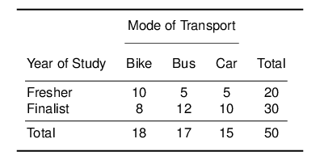
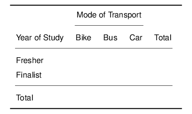

Worksheet Week 1
Self-Assessment Questions1
- What do cross-tabulations do?
- Can we use continuous variables for cross-tabulations?
- What are the strengths and weaknesses of cross-tabulations?
- Why do we calculate the \(\chi^2\)-value as \(\chi^{2} = \Sigma \frac{(f_{o}-f_{e})^{2}}{f_{e}}\) ?
- How does the \(\chi^2\) distribution differ from the t- and normal distribution?
Please stop here and don’t go beyond this point until we have compared notes on your answers.
Calculations by Hand
I have given you an example of a cross-tabulation in the lecture. Consider the following Table:

Calculate the Expected Values and fill in the following table:

- Calculate the \(\chi^{2}\)-value
- How many degrees of freedom does this table have? Why?
- Using the \(\chi^2\) Table, what is the p-value?
- Are mode of transport and year of study independent in the population?
Cross-Tabulations in R
If you have joined PO12Q without suffering through PO11Q, then please work through these two worksheets before proceeding with the present material:
Data Set
- We are working with the World Development Indicators this week. Data are taken from World Bank (2024), Boix et al. (2018), and Marshall & Gurr (2020).
- Download the data WDI_PO12Q.csv and place it in a new working directory for this week
- The variables we will be working with today are as follows:
| variable | label |
|---|---|
| Country Name | Country Name |
| Country Code | Country Code |
| year | year |
| gdppc | GDP per capita (constant 2010 US$) |
| gdpgrowth | Absolute growth of per capita GDP to previous year (constant 2010 US Dollars) |
| enrl_gross | School enrollment, primary (% gross) |
| enrl_net | School enrollment, primary (% net) |
| agri | Employment in agriculture (% of total employment) (modeled ILO estimate) |
| slums | Population living in slums (% of urban population) |
| telephone | Fixed telephone subscriptions (per 100 people) |
| internet | Individuals using the Internet (% of population) |
| tax | Tax revenue (% of GDP) |
| electricity | Access to electricity (% of population) |
| mobile | Mobile cellular subscriptions (per 100 people) |
| service | Services, value added (% of GDP) |
| oil | Oil rents (% of GDP) |
| natural | Total natural resources rents (% of GDP) |
| literacy | Literacy rate, adult total (% of people ages 15 and above) |
| prim_compl | Primary completion rate, total (% of relevant age group) |
| infant | Mortality rate, infant (per 1,000 live births) |
| hosp | Hospital beds (per 1,000 people) |
| tub | Incidence of tuberculosis (per 100,000 people) |
| health_ex | Current health expenditure (% of GDP) |
| ineq | Income share held by lowest 10% |
| unemploy | Unemployment, total (% of total labor force) (modeled ILO estimate) |
| lifeexp | Life expectancy at birth, total (years) |
| urban | Urban population (% of total population) |
| polity5 | Combined Polity V score |
Loading the Data
You can copy the code from this page by hovering over the code chunk and clicking the icon in the top-right hand corner. You can then paste it into your RScript.
Guided Example
- We are now going to use the WDI, and produce a crosstab of Life expectancy at birth, total (years) by GDP per capita (constant 2010 US$), using the variables
lifeexpandgdppc - We first need to recode both variables into factor variables, as these are continuous.
- First up is
lifeexp - Recoding: as a refresher from PO11Q, we are specifying the new data frame as the old one, then we add a pipe, and call the function
mutate. Therein, we create a new variable calledlifecat, which will be an ordered factor, cutting the variablelifeat the stated intervals, and labeling these levels accordingly.
Code
Make a habit of adding a note underneath each code chunk in your RScript (with a ‘#’) in which you translate the code into plain English.
- Next up is
gdppcwhich we are recoding into a factor variable with three levels:
Code
- Let us now see whether the level of GDP has an influence on life expectancy
- State the null and the alternative hypothesis (directional)
- Run the cross-tabulation, by calling:
Code
- Now perform a chi-squared test, using the command2
Code
As on PO11Q, you can find all R functions on the POQ Flashcard Section of my webpage.
- Are the results statistically significant? At what level?
- What do these results mean for our hypotheses?
- Produce the table of expected frequencies, using the command
Code
- You can compare that to the observed ones:
You can see that this is identical to producing the cross-tabulation in the first place:
- In plain English: What have we found out?
Exercises
- Let us find out whether the completion of primary school influences unemployment rates.
State the null and directional alternative hypothesis for this test.
Create a new variable
primary_facusing theprim_complvariable. Cut it into three categories “low”, “medium”, and “high”, cuttingprim_complat its first quartile, and its mean.Apply the same procedure to
unemploy, creating a new variable calledunemp_fac.Create a cross-tabulation assessing the dependence of unemployment on primary completion rate.
unemp_fac.Test whether the dependence is statistically significant.
unemp_fac.
- Repeat steps 1a) to 1e) for two variables of your own choice.
Solutions
You can find the Solutions in the Downloads Section.
Some of the content of this worksheet is taken from Reiche (forthcoming).↩︎
I am using the
correct=FALSEoption here to reproduce the \(\chi^{2}\)-value you would get if you calculated this by hand. Technically, \(\chi^{2}\) is only an approximation of the hypergeometric distribution which would deliver an exact test. You can get the precise value by applying Yates’ continuity correction withcorrect=TRUE.↩︎